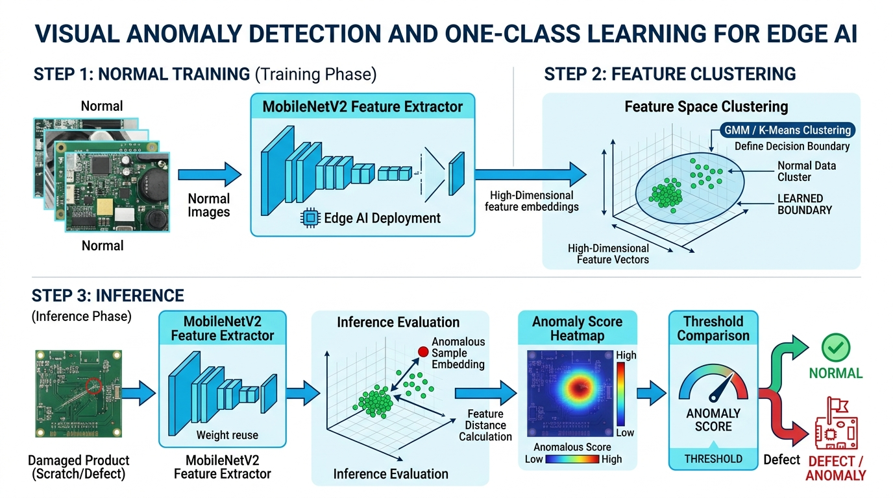
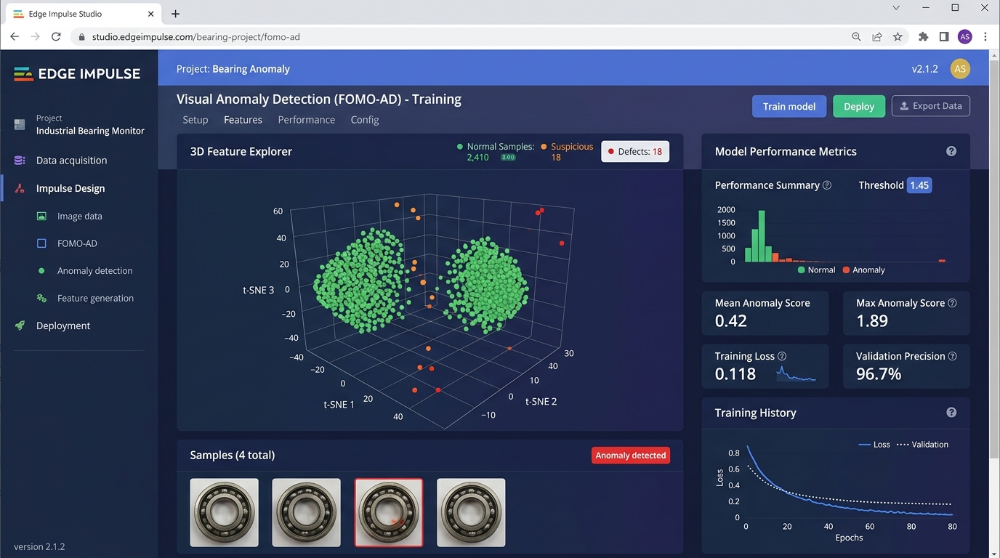

สาระสำคัญและผลการเรียนรู้ประจำบท
กรอบมาตรฐานการเรียนรู้ตามหลักสูตรแกนกลางการศึกษาขั้นพื้นฐาน และสมรรถนะสำคัญของผู้เรียน
การตรวจสอบคุณภาพชิ้นงานในสายการผลิตอุตสาหกรรมมักประสบปัญหาการขาดแคลนข้อมูลชิ้นงานที่ชำรุดเสียหาย สถาปัตยกรรม Visual Anomaly Detection (FOMO-AD) บนแพลตฟอร์ม Edge Impulse แก้ปัญหานี้ด้วยหลักการ การเรียนรู้แบบกลุ่มเดียว (One-Class Learning) โดยใช้เฉพาะภาพถ่ายชิ้นงานปกติที่สมบูรณ์ในการฝึกสอน เพื่อสร้างแบบจำลองสกัดคุณลักษณะเด่น (Feature Extractor) ด้วย MobileNetV2 และประเมินความผิดปกติของชิ้นงานใหม่ผ่านการคำนวณระยะห่างทางสถิติออกมาเป็น คะแนนความผิดปกติ (Anomaly Score) ช่วยให้ระบบสามารถตรวจจับรอยตำหนิที่ไม่เคยพบเห็นมาก่อนได้อย่างแม่นยำและรวดเร็วบนอุปกรณ์ปลายทาง
ผลการเรียนรู้ที่คาดหวังตามกรอบสมรรถนะ (Learning Outcomes)
ผู้เรียนสามารถอธิบายความแตกต่างระหว่างการจำแนกภาพแบบหลายกลุ่ม (Classification) กับการเรียนรู้แบบกลุ่มเดียว (One-Class Learning), โครงสร้างโมเดล FOMO-AD และหลักการคำนวณระยะห่างเวกเตอร์เพื่อหาคะแนนความผิดปกติ (Anomaly Score) ได้อย่างถูกต้อง
ผู้เรียนสามารถจัดเตรียมชุดข้อมูลภาพชิ้นงานแบบไม่สมมาตร (Asymmetric Dataset), วิเคราะห์การกระจายตัวของข้อมูลใน 3D Feature Explorer และกำหนดค่าขีดเริ่มเปลี่ยน (Threshold) เพื่อแยกแยะชิ้นงานปกติและชิ้นงานชำรุดได้อย่างแม่นยำ
ผู้เรียนสามารถออกแบบ Impulse, กำหนดค่าบล็อก Image Processing และบล็อกการเรียนรู้ Visual Anomaly Detection บน Edge Impulse Studio ตลอดจนฝึกสอนและประเมินประสิทธิภาพโมเดลได้อย่างสมบูรณ์
ผู้เรียนมีความตระหนักในมาตรฐานความปลอดภัยขั้นวิกฤตของระบบอุตสาหกรรม มีความละเอียดรอบคอบในการควบคุมสภาวะแสงเพื่อป้องกันอคติของข้อมูล (Data Bias) และมีวินัยในการบันทึกผลการทดสอบทางวิศวกรรม
สถาปัตยกรรม One-Class Learning และการตรวจจับความผิดปกติทางภาพ
ในกระบวนการผลิตเชิงอุตสาหกรรมจริง ชิ้นงานที่ผลิตออกมาส่วนใหญ่กว่า 99% คือชิ้นงานที่มีความสมบูรณ์และได้มาตรฐาน ส่วนชิ้นงานที่ชำรุดเสียหายมักเกิดขึ้นได้ยากและมีรูปแบบของรอยตำหนิที่หลากหลายอย่างไม่สิ้นสุด เช่น รอยขีดข่วน รอยตามด คราบน้ำมัน รอยแตกร้าว หรือชิ้นส่วนบิดงอ การใช้แบบจำลองโครงข่ายประสาทเทียมแบบจำแนกประเภท (Classification) ทั่วไปที่ต้องป้อนข้อมูลของดีและของเสียจำนวนเท่าๆ กัน จึงเป็นไปได้ยากอย่างยิ่งในทางปฏิบัติ
เทคโนโลยี Visual Anomaly Detection (FOMO-AD) บนแพลตฟอร์ม Edge Impulse แก้ปัญหานี้ด้วยสถาปัตยกรรม การเรียนรู้แบบกลุ่มเดียว (One-Class Learning) โดยใช้ภาพถ่ายของชิ้นงานปกติที่สมบูรณ์เท่านั้นในการฝึกสอนเพื่อเรียนรู้ลักษณะทางสถิติและสร้าง "ขอบเขตความปกติ (Normal Cluster Boundary)" เมื่อมีชิ้นงานใดที่มีลักษณะเบี่ยงเบนออกนอกกลุ่ม ระบบจะคำนวณระยะห่างออกมาเป็น คะแนนความผิดปกติ (Anomaly Score) ทันที

รูปที่ 5.1: แผนภาพแสดงสถาปัตยกรรมการเรียนรู้แบบกลุ่มเดียว (One-Class Learning Phase) และการประเมินผลขณะปฏิบัติงานจริง (Inference Phase)
ภาพชิ้นงานปกติถูกส่งผ่านโครงข่ายสกัดคุณลักษณะ (Feature Extractor) เช่น MobileNetV2 ที่ตัดชั้นจำแนกประเภทส่วนท้ายออก เพื่อแปลงภาพความละเอียดสูงให้กลายเป็นเวกเตอร์ตัวเลขในปริภูมิต่ำ (Feature Embeddings)
อัลกอริทึมจัดกลุ่มข้อมูล เช่น Gaussian Mixture Model (GMM) หรือ K-Means Clustering จะจำลองการกระจายตัวของเวกเตอร์ภาพปกติ เพื่อกำหนดขอบเขตความน่าจะเป็นทางสถิติ (Learned Normal Boundary)
เมื่อนำภาพชิ้นงานทดสอบเข้ามา ระบบจะคำนวณระยะห่างของเวกเตอร์เทียบกับกลุ่มปกติ หากมีรอยตำหนิ จุดดังกล่าวจะมีระยะห่างสูงผิดปกติ ส่งผลให้ค่า Anomaly Score พุ่งสูงเกินเกณฑ์ขีดเริ่มเปลี่ยน (Threshold)
เนื้อหาบทเรียน 4 ตอน (Course Content Units)
หลักการ One-Class Learning และโมเดล FOMO-AD
ในงานวิจัยด้านวิทัศน์เครื่องจักร (Machine Vision) การตรวจจับความผิดปกติจัดอยู่ในกลุ่มปัญหาการเรียนรู้แบบไม่มีผู้กำกับอย่างสมบูรณ์ (Unsupervised) หรือกึ่งมีผู้กำกับ (Semi-supervised) แต่ในทางวิศวกรรมระบบสมองกลฝังตัว Edge Impulse ได้พัฒนาโมเดล FOMO-AD (Faster Objects, More Objects - Anomaly Detection) ซึ่งมีคุณสมบัติเด่นดังนี้:
ใช้หน่วยความจำแรม (RAM) น้อยกว่า 500 KB และประมวลผลบนหน่วยประมวลผลสัญญาณดิจิทัลหรือซีพียู Arm Cortex ได้อย่างรวดเร็ว โดยไม่จำเป็นต้องพึ่งพาชิป GPU ราคาแพง
แตกต่างจากโมเดล Autoencoder ทั่วไปที่ให้คะแนนทั้งภาพเพียงค่าเดียว FOMO-AD แบ่งภาพเป็นกริดย่อย (Grid Patches) ทำให้สามารถบอกพิกัดจุดที่เกิดรอยขีดข่วนหรือความชำรุดได้อย่างชัดเจน
การออกแบบบล็อก Impulse และการสกัดคุณลักษณะเด่น
การตั้งค่าโครงสร้างระบบประมวลผลบนเมนู Impulse Design ประกอบด้วย 3 องค์ประกอบหลักที่ต้องเชื่อมต่อกันอย่างเป็นระบบ:
- Time series data / Image input: กำหนดขนาดภาพมาตรฐาน เช่น
96x96หรือ160x160พิกเซล และเลือกรูปแบบสีเป็นRGBหรือGrayscaleตามลักษณะงาน - Processing block (Image): ขั้นตอนการปรับขนาดภาพ (Resize), การเกลี่ยข้อมูล (Normalization) และการจัดรูปแบบเทนเซอร์ให้อยู่ในช่วงตัวเลข
[0.0, 1.0]หรือ[-1.0, 1.0] - Learning block (Visual Anomaly Detection): เลือกใช้อัลกอริทึม FOMO-AD หรือ GMM เพื่อสร้างแบบจำลองการกระจายตัวของชิ้นงานปกติ
ในชุดฝึกสอน (Training Set) ต้องมีเฉพาะภาพชิ้นงานปกติ (Normal) เท่านั้น ห้ามนำภาพชิ้นงานที่มีตำหนิเข้ามาปะปนในขั้นตอนนี้เด็ดขาด เพราะจะทำให้แบบจำลองจดจำว่ารอยตำหนินั้นคือลักษณะที่ยอมรับได้ ส่งผลให้ความแม่นยำของระบบลดลงทันที
การประเมินผลผ่าน 3D Feature Explorer และการปรับจูนการฝึกสอน
หลังจากกดปุ่ม Start training บน Edge Impulse Studio ระบบจะแสดงหน้าจอสรุปผลลัพธ์การฝึกสอน พร้อมด้วยเครื่องมือสร้างมโนทัศน์ข้อมูลเชิงพื้นที่ 3D Feature Explorer ซึ่งใช้เทคนิคการลดมิติข้อมูล (Dimensionality Reduction) เช่น UMAP หรือ t-SNE ในการฉายภาพเวกเตอร์คุณลักษณะออกมาเป็นพิกัด 3 มิติ

รูปที่ 5.2: หน้าต่าง Visual Anomaly Detection (FOMO-AD) บน Edge Impulse Studio แสดง 3D Feature Explorer และดัชนีชี้วัดประสิทธิภาพ
- กลุ่มจุดสีเขียว (Green Clusters): แสดงภาพชิ้นงานปกติที่ใช้ในการฝึกสอน หากข้อมูลมีคุณภาพ จุดสีเขียวควรเกาะกลุ่มกันอย่างหนาแน่นและมีรูปทรงกลมกลืน
- จุดสีส้มและสีแดง (Orange & Red Dots): แสดงภาพชิ้นงานที่มีความน่าสงสัยหรือชำรุดเสียหาย ซึ่งควรอยู่ห่างจากกลุ่มจุดสีเขียวอย่างมีนัยสำคัญ
- จุดที่กระจัดกระจายหลุดกลุ่ม (Outliers): หากพบจุดภาพปกติหลุดออกไปอยู่โดดเดี่ยว แสดงว่าภาพนั้นอาจมีสภาวะแสงไม่คงที่ มีเงาทึบ หรือมุมกล้องผิดเพี้ยนไปจากมาตรฐาน
การคำนวณคะแนนความผิดปกติ (Mean/Max Score) และการกำหนดค่าขีดเริ่มเปลี่ยน
เมื่อแบบจำลองประมวลผลภาพถ่าย ระบบจะให้ค่าคะแนนความผิดปกติออกมาเป็น 2 มิติหลัก ซึ่งผู้พัฒนาต้องเลือกใช้ให้ตรงกับลักษณะงาน:
| ดัชนีคะแนน (Metric) | ความหมายและการคำนวณ | กรณีการใช้งานที่เหมาะสม |
|---|---|---|
| Anomaly Mean Score | ค่าเฉลี่ยของคะแนนความผิดปกติจากทุกกริดย่อยทั่วทั้งภาพ | ความผิดปกติที่ครอบคลุมพื้นที่กว้าง เช่น สภาพพื้นผิวเปลี่ยนสี, ชิ้นงานผิดรุ่น, การเปรอะเปื้อนคราบน้ำมันทั้งชิ้น |
| Anomaly Max Score | ค่าคะแนนความผิดปกติที่สูงสุดของกริดย่อยใดกริดย่อยหนึ่ง | รอยตำหนิขนาดเล็กเฉพาะจุด เช่น รอยขีดข่วนบางๆ, รอยแตกมุมขอบ, เม็ดตามดบนลูกปืน (แม้ค่าเฉลี่ยทั้งภาพจะยังต่ำ) |
หากตั้งค่า Threshold ต่ำเกินไป (เช่น 8.0) จะทำให้ระบบไวต่อแสงเงา ส่งผลให้ชิ้นงานปกติถูกตีเป็นของเสียบ่อยครั้ง (High False Positives) แต่หากตั้งค่าสูงเกินไป (เช่น 45.0) จะทำให้ชิ้นงานที่มีรอยขีดข่วนขนาดเล็กหลุดรอดไปได้ (High False Negatives) ในทางวิศวกรรมจึงควรทดสอบกับชิ้นงานทดสอบ (Test Dataset) อย่างน้อย 50 ชิ้น เพื่อหาจุดตัดที่สร้างความสมดุลสูงสุด
ตัวอย่างโค้ดและการทดสอบระบบ (Code Implementation & Testing)
ไฟล์โค้ดสำหรับบทเรียนนี้ได้รับการจัดเก็บไว้ในโฟลเดอร์ code_examples/chapter05 ประกอบด้วยไฟล์คอนฟิกูเรชัน app.yaml และสคริปต์ประเมินผลคะแนนความผิดปกติ vad_test.py
version: "1.0" module_name: "visual_anomaly_detection_test" description: "การทดสอบและประเมินค่าคะแนนความผิดปกติของภาพ (Visual Anomaly Score Evaluation)" model: name: "fomo_ad_bearing_model" format: "eim" input_width: 96 input_height: 96 color_depth: "RGB" feature_extractor: "MobileNetV2" alpha: 0.35 anomaly_detection: anomaly_threshold: 20.0 # เกณฑ์ขีดเริ่มเปลี่ยนในการตัดสินใจ (Anomaly Threshold) critical_threshold: 40.0 # เกณฑ์ขีดเริ่มเปลี่ยนขั้นวิกฤต (Critical Defect) evaluation_metric: "max" # ใช้ค่าสูงสุดรายพิกัดกริดเพื่อดักจับรอยตำหนิขนาดเล็ก camera: device_id: 0 capture_width: 640 capture_height: 480 fps: 30
class VisualAnomalyEvaluator:
"""คลาสสำหรับประเมินและตัดสินผลการตรวจจับความผิดปกติจากภาพ"""
def __init__(self, threshold: float = 20.0, critical_threshold: float = 40.0, grid_size: int = 12):
self.threshold = threshold
self.critical_threshold = critical_threshold
self.grid_size = grid_size # ขนาดกริดคุณลักษณะ 12x12 ช่องย่อย
def evaluate_sample(self, sample_name: str, grid_scores: list) -> dict:
flat_scores = [score for row in grid_scores for score in row]
mean_score = sum(flat_scores) / len(flat_scores)
max_score = max(flat_scores)
# ตัดสินผลตามเกณฑ์ขีดเริ่มเปลี่ยน (Thresholding Logic)
if max_score > self.critical_threshold:
verdict = "REJECT_CRITICAL"
status_desc = "ไม่ผ่านเกณฑ์ขั้นวิกฤต (พบการชำรุดรุนแรง/แตกหัก)"
action_desc = "สั่งการก้านปัดคัดแยกชิ้นงาน และส่งสัญญาณแจ้งเตือนผู้ควบคุมเครื่องจักร"
elif max_score > self.threshold:
verdict = "REJECT_DEFECT"
status_desc = "ไม่ผ่านเกณฑ์ (ตรวจพบรอยตำหนิ/รอยขีดข่วนผิดปกติ)"
action_desc = "สั่งการก้านปัดคัดแยกชิ้นงานออกสู่ช่องกักกันเพื่อตรวจสอบซ้ำ"
elif max_score > (self.threshold * 0.6):
verdict = "PASS_WARNING"
status_desc = "ผ่านเกณฑ์แบบเฝ้าระวัง (มีความผันแปรของแสงหรือพื้นผิวเล็กน้อย)"
action_desc = "ส่งต่อชิ้นงานเข้าสู่กระบวนการถัดไป พร้อมบันทึกภาพลงฐานข้อมูลเพื่อวิเคราะห์แนวโน้ม"
else:
verdict = "PASS_NORMAL"
status_desc = "ผ่านเกณฑ์มาตรฐานสมบูรณ์ (ชิ้นงานปกติ)"
action_desc = "ส่งต่อชิ้นงานเข้าสู่กระบวนการบรรจุภัณฑ์ถัดไป"
return {
"sample_name": sample_name,
"mean_score": round(mean_score, 2),
"max_score": round(max_score, 2),
"verdict": verdict,
"status_description": status_desc,
"recommended_action": action_desc
}
$ python code_examples/chapter05/vad_test.py
===========================================================================
บทเรียนที่ 5: โครงการตรวจจับความผิดปกติจากภาพบนระบบสมองกลฝังตัว (FOMO-AD)
รายงานผลการประเมินคะแนนความผิดปกติ (Visual Anomaly Assessment)
===========================================================================
[การประเมิน] BEARING_SAMPLE_001 (ลูกปืนปกติสมบูรณ์)
├─ คะแนนเฉลี่ย (Mean Score): 2.38
├─ คะแนนสูงสุด (Max Score): 3.95
├─ พิกัดกริดที่ตรวจพบ (Row, Col): (11, 0)
├─ ผลการวินิจฉัย (Verdict): ผ่านเกณฑ์มาตรฐานสมบูรณ์ (ชิ้นงานปกติ)
└─ คำสั่งปฏิบัติการทางกายภาพ: ส่งต่อชิ้นงานเข้าสู่กระบวนการบรรจุภัณฑ์ถัดไป
[การประเมิน] BEARING_SAMPLE_003 (ลูกปืนมีรอยตามด/รอยขีดข่วน)
├─ คะแนนเฉลี่ย (Mean Score): 2.37
├─ คะแนนสูงสุด (Max Score): 23.50
├─ พิกัดกริดที่ตรวจพบ (Row, Col): (4, 5)
├─ ผลการวินิจฉัย (Verdict): ไม่ผ่านเกณฑ์ (ตรวจพบรอยตำหนิ/รอยขีดข่วนผิดปกติ)
└─ คำสั่งปฏิบัติการทางกายภาพ: สั่งการก้านปัดคัดแยกชิ้นงานออกสู่ช่องกักกันเพื่อตรวจสอบซ้ำ
--- แผนภาพความผิดปกติ (Feature Grid Heatmap): BEARING_SAMPLE_003 ---
00 01 02 03 04 05 06 07 08 09 10 11
04 [ ## ## ]
[เสร็จสิ้น] ระบบประเมินค่าคะแนนความผิดปกติพร้อมนำไปเชื่อมโยงร่วมกับ Modular Brick
ใบงานและภารกิจปฏิบัติการประจำบทเรียน (Practical Tasks)
ให้นักเรียนปฏิบัติตามภารกิจทั้ง 5 ขั้นตอน โดยคลิกทำเครื่องหมายลงในช่องสี่เหลี่ยมเมื่อปฏิบัติภารกิจเสร็จสมบูรณ์ ระบบจะคำนวณและบันทึกความก้าวหน้าลงในหน่วยความจำของอุปกรณ์โดยอัตโนมัติ
คำถามประเมินความเข้าใจและคิดวิเคราะห์ (Review Questions)
คลิกเพื่อดูแนวคำตอบ
คลิกเพื่อดูแนวคำตอบ
คลิกเพื่อดูแนวคำตอบ
1. ตรวจสอบสภาวะแสงและสิ่งแวดล้อมทางกายภาพ: ตรวจสอบว่ามีแสงสะท้อน แสงธรรมชาติจากภายนอกโรงงาน หรือการสั่นสะเทือนของกล้องที่เปลี่ยนไปจากตอนเก็บข้อมูลชุดฝึกสอนหรือไม่
2. ตรวจสอบการปรับค่าขีดเริ่มเปลี่ยน (Anomaly Threshold): ตรวจดูว่าเกณฑ์ Threshold ตั้งไว้ต่ำเกินไปหรือไม่ หากต่ำเกินไปให้เพิ่มค่าขีดเริ่มเปลี่ยนขึ้นทีละระดับ
3. เพิ่มความหลากหลายของชิ้นงานปกติในชุดฝึกสอน: เก็บรวบรวมภาพชิ้นงานปกติในสภาวะมุมมองและรอบการทำงานที่หลากหลายยิ่งขึ้น แล้วทำการฝึกสอนโมเดลใหม่เพื่อให้ขอบเขตกลุ่มปกติ (Normal Cluster Boundary) ครอบคลุมสภาวะการผลิตจริงได้สมบูรณ์
แบบทดสอบท้ายบทเรียนที่ 5 (ปรนัย 10 ข้อ)
ทดสอบความรู้ความเข้าใจตามเกณฑ์มาตรฐานตัวชี้วัดสาระเทคโนโลยี พร้อมเฉลยและบันทึกคะแนนอัตโนมัติ
บทเรียนที่ 6: การนำโมเดล .eim ไปใช้งานและการกำหนดค่าไฟล์ app.yaml บนบอร์ดพัฒนา Arduino UNO Q
การคอมไพล์โมเดลไบนารี AArch64 การถ่ายโอนไฟล์ การกำหนดสิทธิ์ chmod +x และการตั้งค่า app.yaml